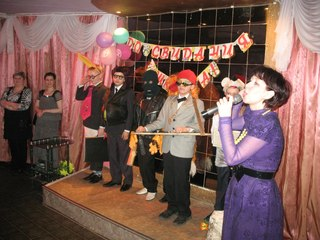
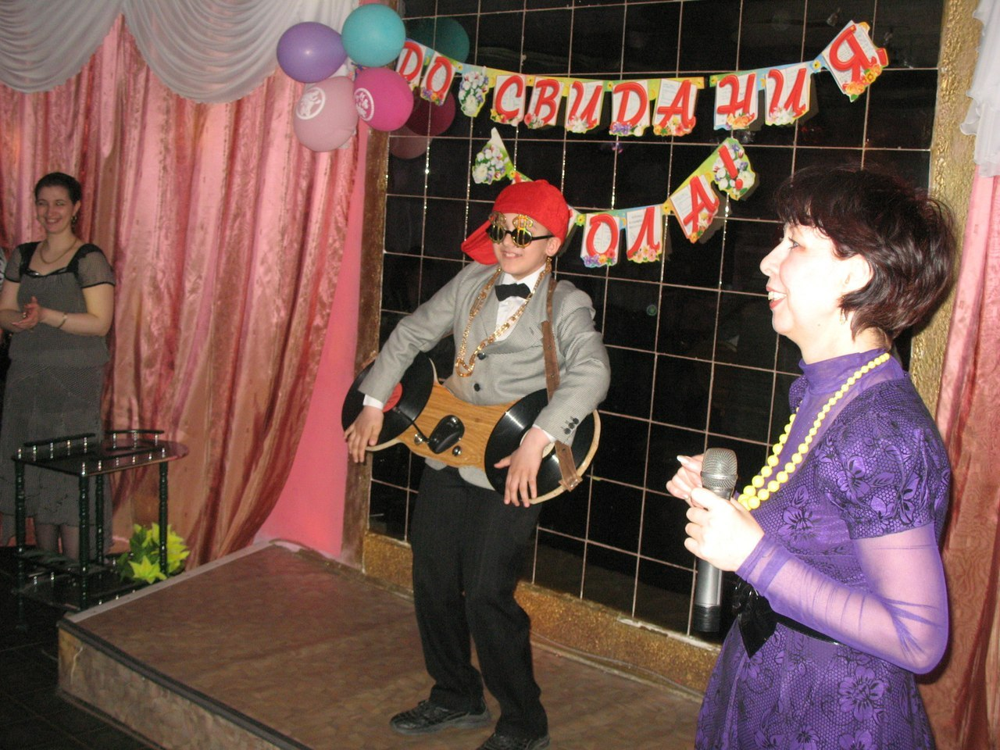
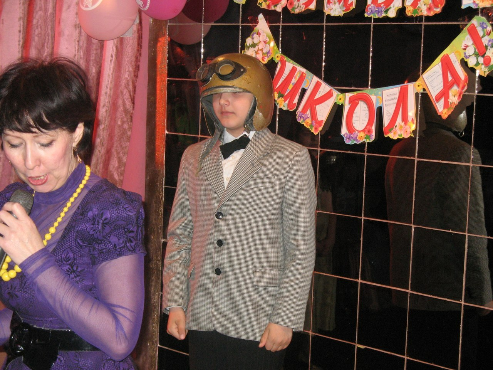

MC Vlad's oficial page
Ранние годы
Всем привет меня зовут Влад и я репер. Я начал делать реп еще когда посещал детский сад и в нем до сих пор ходят легенды о владе батлрепере. Родители занимают огромные очереди чтобы отправить своих детей туда же, откуда вышел я, потому что они верят в то что их дети достигнут успеха так же как и я.
В школе на переменах в туалете, я рифмами унижал старшеклассников после чего они переводились в другие школы, а иногда и города. После того как среди учеников четвертои школы не осталось тех кого я ещё не победил, я решил выйти на область. Свою реп карьеру я сочитал с настольным теннисом и на всех выездных соревнованиях под трибунами я уничтожал своими панчами местных бэтл авторитетов
После нескольких лет батл репа, все в России были унижены и я перешел на международный уровень. Я бэтлил со всеми кто изъявлял желание и на любом языке. Я бэтлил на английском, суахили, хинди, арабском, испанском, немецком, финском, исландском и несколько раз на иврите.После 12 реп карьеры я понял что на этои планете я лучший и решил завершить карьеру так как достиг предела в бэтл рэпе.
Мой ВУЗ
Мой университет - это место, в котором я могу реализовать себя. Для меня это второй дом, ведь здесь я провожу большую часть своего времени, занимаясь любимым делом.
С четырехлетнего возраста я понимал, что программирование - это что-то особенное для меня. Сначала я играл на денди, став постарше, увлёкся игрой на плойке, а в подростковом возрасте уже имел первый опыт в программировании. Тогда я осознал, что программирование - это то, чем я хочу заниматься всю жизнь. Когда я пришёл на день открытых дверей в НВГУ и узнал, что здесь программирвоание может стать профессией, вопрос "куда поступать" отпал сам собой. Занимаясь на подготовительных курсах, я дважды в неделю приходил сюда. Совсем скоро эти стены стали для меня родными.
My homework
-
С моей BAND
Нью-Йорк 2007 год
- 
-
Сольный концерт
Шанхай. 2009 год
- 
-
Фристайл ко дню победы
Москва. 2008
- 